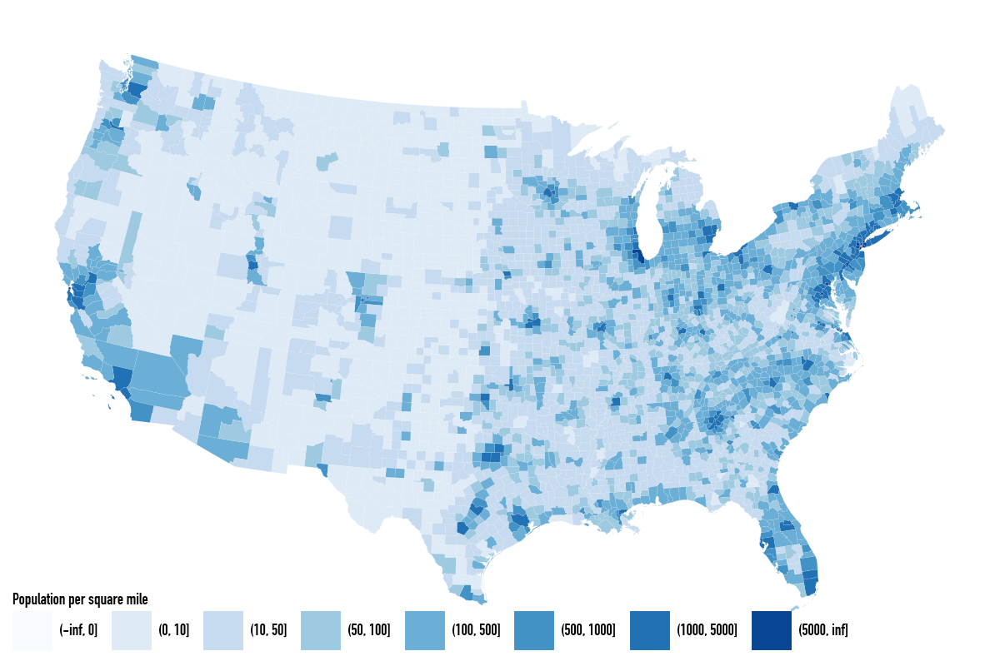

import duckdb
import polars as pl
import socviz_pl as svAppendix A — Preparing the Map Data
This appendix discusses the data-preparation code used to create the Parquet files county_map and states_sf used in Chapter 7. The chapter itself reads the prepared files so that the plotting examples can stay focused on drawing maps with Polars and plotnine_polars.
Both county_map and states_sf are built from the US Census Bureau’s cartographic county boundary shapefiles. This section covers county_map but here we focus on just the contiguous 48 states for simplicity. A similar pipeline is used for states_sf, as discussed at the end.
sv.get_county_boundaries downloads and caches the Census shapefile, returning the path to the .shp file.
boundaries_file = sv.get_county_boundaries(2023, "500k")
boundaries_filePosixPath('/Users/igow/.cache/socviz/census/cb_2023_us_county_500k/cb_2023_us_county_500k.shp')The Census shapefiles store positions as latitude and longitude in degrees, using NAD83 (EPSG:4269) — the standard geodetic datum for US federal mapping data. Before plotting, we project these spherical coordinates onto a flat plane using Albers Equal Area (ESRI:102003), a conic projection that preserves area and is the standard choice for contiguous US maps.
The final step — fortification — explodes each projected (possibly multi-)polygon into one row per exterior-ring vertex. The group column encodes the polygon identity that plotnine uses for the group aesthetic.
con = duckdb.connect()
con.sql("INSTALL spatial")
con.sql("LOAD spatial")Load the county boundaries and project to Albers Equal Area, excluding Alaska and Hawaii. STATEFP is the two-character Census FIPS code for the state. The condition CAST(STATEFP AS INTEGER) <= 56 excludes US territories (Puerto Rico is 72, Guam 66, etc.) whose FIPS codes are all above 56. STATEFP NOT IN ('02', '15') then additionally excludes Alaska and Hawaii, whose codes fall within the ≤ 56 range but lie outside the contiguous US.
counties_projected = con.sql(f"""
SELECT
GEOID AS id,
STATEFP AS state,
ST_Transform(geom,
'EPSG:4269',
'ESRI:102003',
always_xy := true) AS geometry
FROM ST_Read('{boundaries_file}')
WHERE CAST(STATEFP AS INTEGER) <= 56
AND STATEFP NOT IN ('02', '15')
""")The remaining steps convert the polygon geometries into the row-per-vertex format that plotnine needs to draw filled polygons — a process often called fortification. For a deeper treatment of vector geometry concepts, see Pebesma and Bivand (2023) (available at https://r-spatial.org/book/). The DuckDB spatial functions used below are documented at https://duckdb.org/docs/extensions/spatial/overview.html.
ST_Simplify() applies the Douglas–Peucker algorithm to reduce the number of vertices in each polygon while preserving its approximate shape. The tolerance (1000.0 meters in Albers Equal Area) controls the trade-off between fidelity and file size. The WHERE NOT ST_IsEmpty() filter removes any county whose simplified geometry collapses to nothing.
tol = 1000.0
simplified = con.sql(f"""
SELECT id, ST_Simplify(geometry, {tol}) AS geometry
FROM counties_projected
WHERE NOT ST_IsEmpty(ST_Simplify(geometry, {tol}))
""")For the 3,109 contiguous-US counties, the 500k files contain 888,422 vertices before simplification. A 1,000-metre tolerance reduces that to 65,639 — a 92.6% reduction. While this might seem aggressive, it is is appropriate for a national map where individual counties will appear small. However, it could produce visibly jagged outlines if you zoomed in to a single state.
Some counties consist of multiple disconnected areas—island counties, for example—so their geometry type is MULTIPOLYGON. ST_Dump() explodes any multi-polygons into its individual POLYGON pieces, recording each piece’s position within the original geometry as path.
raw_parts = con.sql("""
SELECT
id,
dump.geom AS geom,
dump.path AS path
FROM simplified,
UNNEST(ST_Dump(geometry)) AS t(dump)
""")Each piece gets a sequential piece number within its county, ordered by the dump path. The WHERE ST_GeometryType(geom) = 'POLYGON' filter removes any point or line degenerate geometries that can arise from simplification.
parts = con.sql("""
SELECT
id, geom,
row_number() OVER (
PARTITION BY id ORDER BY CAST(path AS VARCHAR)
) AS piece
FROM raw_parts
WHERE ST_GeometryType(geom) = 'POLYGON'
""")ST_ExteriorRing() extracts the outer boundary of each polygon as a LINESTRING. Polygons can also have interior rings (“holes”), but for filled polygon maps only the exterior ring is needed.
rings = con.sql("""
SELECT id, piece, ST_ExteriorRing(geom) AS ring
FROM parts
""")generate_series() produces the sequence \(1, 2, ..., N\) (where \(N\) is the number of vertices in the ring), and ST_PointN() extracts each vertex in turn, giving one row per vertex with ord recording its position along the ring.
points = con.sql("""
SELECT
id, piece::VARCHAR AS piece,
i AS ord,
ST_PointN(ring, i::INTEGER) AS pt
FROM rings,
generate_series(1, ST_NumPoints(ring)::INTEGER) AS t(i)
""")Finally, ST_X and ST_Y extract the projected coordinates for each point. The group column combines the Census GEOID prefix 0500000US (county level) with the county FIPS code and piece number; plotnine will use this to identify which vertices form a single closed polygon.
county_map = con.sql("""
SELECT
ST_X(pt) AS long,
ST_Y(pt) AS lat,
ord,
piece,
'0500000US' || id || '.' || piece AS "group",
id
FROM points
ORDER BY id, piece, ord
""").pl()from plotnine_polars import aes
import plotnine_polars as p9
county_data = sv.load_data("county_data")The county map and county data objects join on the county FIPS code. This gives us the same large polygon table used in the book, with county-level variables attached.
pop_cuts = [0, 10, 50, 100, 500, 1000, 5000]
county_full = (
county_map
.join(county_data, on="id", how="left")
.with_columns(pop_dens=pl.col("pop") / pl.col("area_sqmi"))
.with_columns(pl.col("pop_dens").cut(pop_cuts))
)(
county_full
.ggplot(aes(x="long", y="lat", group="group", fill="pop_dens"))
.geom_polygon(color="#F2F2F2", size=0.02)
.coord_equal()
.scale_fill_brewer(palette="Blues")
.labs(fill="Population per square mile")
.add_guides(fill=p9.guide_legend(nrow=1))
.add_theme(
legend_title=small_font,
legend_text=small_font,
figure_size=(6, 4),
legend_position_inside=(0.0, -0.02)
)
)
states_sf uses the same pipeline as county_map. The only difference is that county boundaries are dissolved to state level before the simplification and fortification steps. Replace counties_projected with the following, then apply the same simplify-and-fortify steps.
states_projected = con.sql("""
SELECT state, ST_Union_Agg(geometry) AS geometry
FROM counties_projected
GROUP BY state
""")The FIPS codes in the state column are then replaced with full state names.
The socviz_py data includes Alaska and Hawaii repositioned as map insets. This requires projecting into three coordinate systems simultaneously — Albers Equal Area (ESRI:102003) for the contiguous states, Alaska Albers (EPSG:3338) for Alaska, and Hawaii Albers (ESRI:102007) for Hawaii — and then using affine transforms to scale and translate each state into its inset position relative to the lower-48 bounding box.